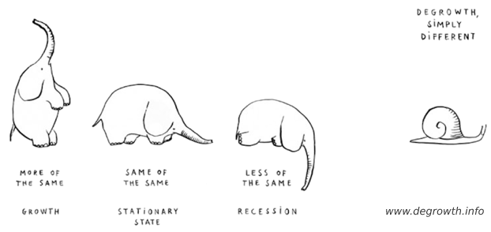

“What is your profession?” “To be a good person.” —Marcus Aurelius
Ambition is overrated. Whether you're a janitor or a surgeon, being virtuous is what matters [1]. Don't look down upon others, don't envy others, we each have our part to play [2]. Spend time with friends if you have them, be a friend if you don't. The meaning of life is sharing (and) laughter [3], helping each other through peaks and throughs.
[1] Dr. Michael Sugrue: Marcus Aurelius' Meditations: The Stoic Ideal.
[2] Nicky Case: “Fireflies”.
[3] YouTube: The Meaning of Life.
Email, Telegram, [matrix], Goodreads, YouTube, Twitter, Mastodon.
Lichess.org is the best chess website on the Web; completely free while refusing the use of ads and trackers. Click the following link to play me.
Because power-mad greedy monopolies need competition. Here's a list of all the software I use.
Throughout the years I've changed my mind often. Contrary to popular belief, that's a good thing.
“When the facts change, I change my mind. What do you do, sir?”
Current preferences:
Preferences on hold:
Discarded preferences:
❦
We live on a planet with finite resources, an economy that aims for indefinite growth is inherently unsustainable. Stop it. GDP needs to yield for UBI; the economy should serve humanity and nature, not the other way around.
[♔ Article in progress.]
I enjoy working hard, especially toward a common good, a noble goal, or simply helping a friend. The fruits of your labour are immediately visible, and don't simply increase the profits of some intangible entity or harmful industry. However, ever since I can remember I've never liked the thought of work, or, “a job”. Doing the same thing day in day out for the rest of your life, five days a week, seeing your colleagues more than your friends … how incredibly boring. Unless of course one is lucky enough to have found his dream profession, but that doesn't count as “work”. Due to this being a remarkably touchy subject, in which my stance is often considered sacrilege, I'll let the greater minds do some talking:
“Einstein struck a more serious pose when he addressed the Caltech student body near the end of his stay. His sermon, grounded in his humanistic outlook, was on how science had not yet been harnessed to do more good than harm. During war it gave people “the means to poison and mutilate one another,” and in peacetime it “has made our lives hurried and uncertain.” Instead of being a liberating force, “it has enslaved men to machines” by making them work “long wearisome hours mostly without joy in their labor.” Concern for making life better for ordinary humans must be the chief object of science. “Never forget this when you are pondering over your diagrams and equations!”” —Albert Einstein (1879 – 1955) 📚︎
“People who dismiss the unemployed and dependent as ‘parasites’ fail to understand economics and parasitism. A successful parasite is one that is not recognized by its host, one that can make its host work for it without appearing as a burden. Such is the ruling class in a capitalist society.” —Jason Read
“We must do away with the absolutely specious notion that everybody has to earn a living. It is a fact today that one in ten thousand of us can make a technological breakthrough capable of supporting all the rest. The youth of today are absolutely right in recognizing this nonsense of earning a living. We keep inventing jobs because of this false idea that everybody has to be employed at some kind of drudgery because, according to Malthusian-Darwinian theory, he must justify his right to exist. So we have inspectors of inspectors and people making instruments for inspectors to inspect inspectors. The true business of people should be to go back to school and think about whatever it was they were thinking about before somebody came along and told them they had to earn a living.” —Buckminster Fuller (1895 – 1983) 📚︎
It just isn't possible to mass produce meat without torturing animals. In fact, raising animals specifically for consumption, i.e., “humane slaughter”, is an oxymoron.
“For the Cynics, the purpose of life is to live in virtue, in agreement with nature.” —Wikipedia
Naturally flowing from Cynicism is minimalism. The less you need, the less you have to work, the more time you have; for time is the most valuable resource there is.
As part of a former discussion:
“Well, I read your linked pdf, and all I can say is that neither ecomodernism, degrowth, veganism, etc., has all the solutions. The Western world can implement degrowth for sure because we're drowning in luxury. Nobody needs two homes, a yacht, a luxury car, etc., to be satisfied. We need to learn sharing and be happy with what we've got. However, we cannot expect or tell thirsty, hungry, and needlessly sick people in developing countries: “Hey, stop trying to modernize and suffer less, because we did too much of it already.”
Investing in Small Modular Reactors (SMRs) for instance would work miracles in order to increase the living standards in developing countries while not affecting the environment (nuclear waste is negligible [4] and a solved issue [5]).”
Nuclear energy or atomic energy is green and safe. However, don't take my word for it:
Currently, the time spent on a topic is fixed, and mastery is variable; the converse should be true. Ultimately, education should nurture curiosity, not stifle it.
“[…] beliefs should not be formed on the basis of authority, tradition, revelation, or dogma, and that beliefs should instead be reached by other methods such as logic, reason, and empirical observation.” —Wikipedia
Only informed people should be able to vote on policies in their respective fields of expertise.
“Deliberative democracy, school of thought in political theory that claims that political decisions should be the product of fair and reasonable discussion and debate among citizens.” —Britannica.
My review of The Flaws That Kill Our Democracy by Klaas Mensaert.
In the quest for efficiency, scientists and engineers are often inspired by, and get praised for using mechanisms from the natural world. That politics should be no different is my main takeaway from this book (e.g. bottom-up approach, piecemeal changes, trial-by-combat, etc.), achievable ideas I can fully get behind. Except for that last one, that was a joke. […]
{kind=link}